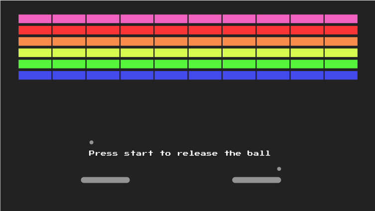

Como Jogar?
Inicia-se com oito fileiras de tijolos, com cada fileiras de diferentes tipos de cores. Usando uma única bola, o jogador deve derrubar tantos tijolos quanto possível, usando as paredes e/ou a plataforma abaixo para bater a bola contra os tijolos e eliminá-los.
Se a plataforma do jogador errar o rebote da bola, eles perderão uma vez. O jogador tem três turnos para tentar limpar duas telas de tijolos. Os tijolos amarelos ganham um ponto cada, os tijolos verdes ganham três pontos, os tijolos laranja ganham cinco pontos e os tijolos vermelhos de nível superior ganham sete pontos cada.
A plataforma encolhe à metade de seu tamanho depois que a bola rompe a linha vermelha e atinge a parede superior. A velocidade da bola aumenta em intervalos específicos: após quatro rebatidas, após doze rebatidas.
História
Breakout é um jogo de arcade desenvolvido e publicado pela Atari, Inc. , e lançado em 13 de maio de 1976. Ele foi conceituado por Nolan Bushnell e Steve Bristow, influenciado pelo seminaljogo de arcade Atari de 1972, Pong.
Em Breakout, uma camada de tijolos reveste o terço superior da tela e o objetivo é destruí-los jogando repetidamente uma bola de uma plataforma neles. O jogo de arcade foi lançado no Japão pela Namco . Uma porta Atari VCS foi lançada em 1978, que usava gráficos coloridos em vez de uma tela monocromática com sobreposição colorida.
Breakout foi um sucesso comercial mundial nos fliperamas, entre os cinco videogames de arcade de maior bilheteria de 1976 nos Estados Unidos e no Japão, e depois entre os três videogames de arcade de maior bilheteria de 1977 nos Estados Unidos e no Japão. A sequência, Super Breakout , tornou-se o jogo completo para o console Atari 5200 em 1982.
Breakout foi um jogo influente que teve impacto nas indústrias de videogames e computadores. Embora o conceito foi antecedido por Ramtek 's Clean Sweep (1974), Breakout gerou todo um gênero de clones. Dez anos depois, o conceito encontrou novas pernas com o Arkanoid de 1986 da Taito , que gerou dezenas de imitadores.
No Japão, o gênero é conhecido como jogos de block kuzushi ("block breaker"). Breakout foi também a base e inspiração para certos aspectos do Apple II computador pessoal e Taito 'arcada s shoot' em up jogo Space Invaders (1978).